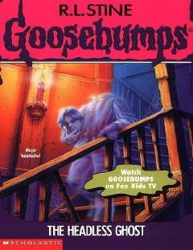

THIkki o'smirning Hill House uyidagi dahshatli arvoh bilan to'qnashuvi haqidagi hikoya.
Duane va Stefani ismli ikki o'smir o'z mahallalarida qo'rqinchli hazillar qilishni yaxshi ko'rishadi. Biroq, ular Hill House deb nomlangan eski uyga duch kelganlarida, haqiqiy arvoh bilan to'qnash kelishadi. Bu voqea ularning odatiy hayotini dahshatli sarguzashtga aylantiradi.